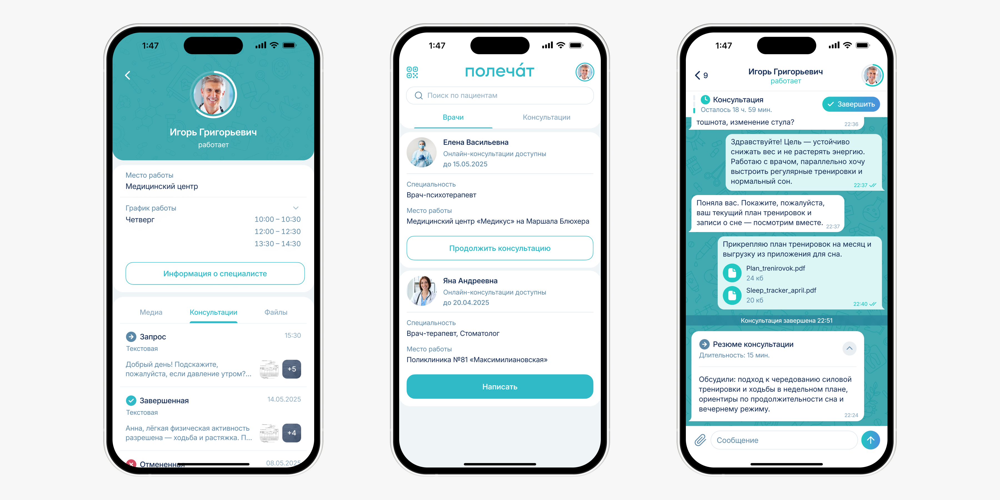
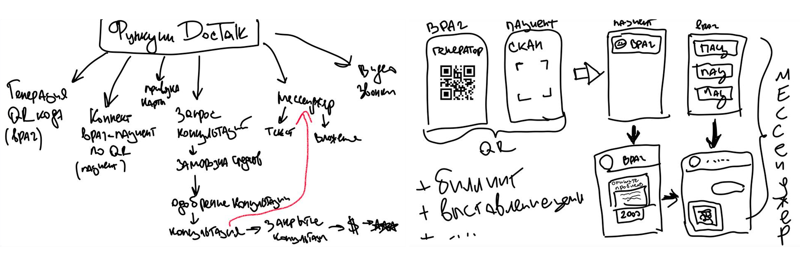
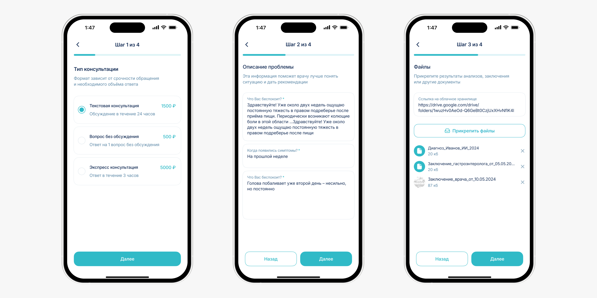
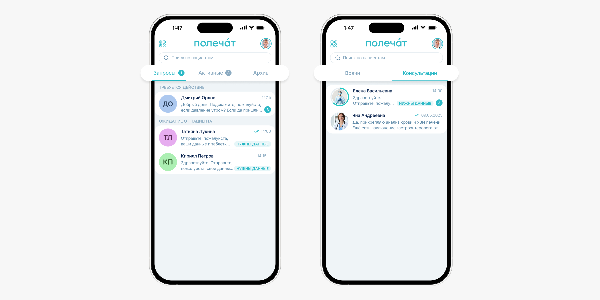
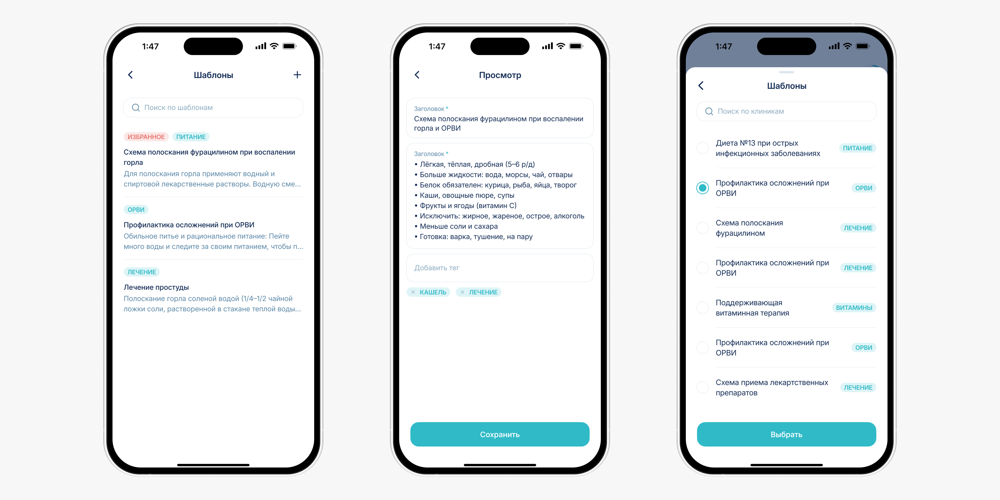
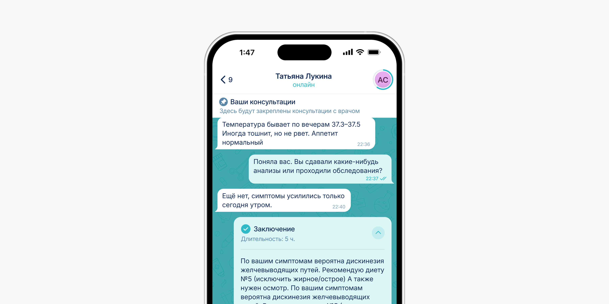
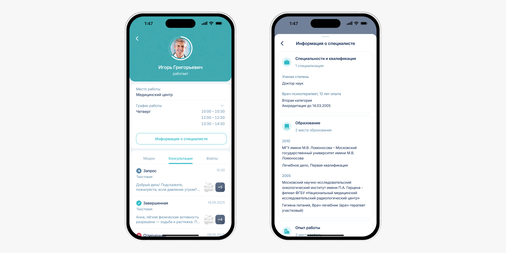
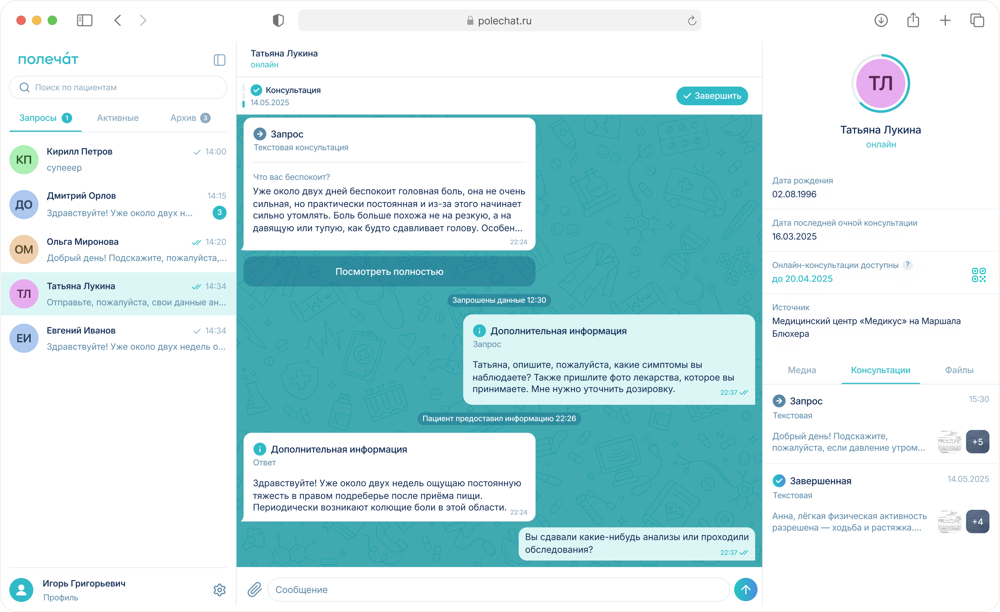

Designed a B2B2C telemedicine platform from scratch
Polechat is a telemedicine product for private clinics and doctors. It moves consultations out of messengers into a compliant, manageable space.
Mar 2025 – May 2026
Somalab
42% faster
260+
2 apps + admin panel
Pilot in 2 clinics

Problem
Doctors were consulting patients over WhatsApp. Chat history got lost, patient data wasn't stored and there was no way to monetize the time spent. Patients lost their prescriptions, couldn't get help quickly and didn't know where to turn for follow-ups. In June 2025 this also became illegal, when Federal Law No. 41-FZ came into force.
The product had to serve two fundamentally different roles with different workflows, build monetization right into the consultation flow and give clinics a way to stay in control.
My role
I led product design from zero to pilot, including:
- Lead design of two apps, from concept to pilot
- Feature prioritization
- User flows and subscription models
- Design system, UI kit and prototypes for every core scenario
- A/B testing
- Admin panel for clinics
- Dev specs, design reviews and close collaboration with engineering and legal
Challenges
The obvious move was to build a simple chat. But Polechat had to work as a complete consultation flow, with payments, statuses, documents and multiple interaction scenarios.
The client came in with a rough flow sketched on a sheet of paper. With no prior telemedicine experience, I built the product structure and the logic for both roles from the ground up on my own.

Approach
Since we were building from scratch, the first step was to lock down the service logic: who takes part in a consultation, what doctors and patients can do, where payment happens, how statuses change and what the clinic needs to see.
I put together several product structures and prototypes to align on flows with the team quickly, validate constraints and separate the core MVP from features for later releases.
Research
I ran two surveys with doctors and patients of private clinics to understand how people interact with doctors online and what stops them from using telemedicine. I also reviewed open market research. I framed segments with Job Stories and mapped the consultation journey. This surfaced the drop-off points and the findings that shaped the design:
QR scan after an in-person visit with their own doctor, guided onboarding and progress bars
The service only connects patients with doctors they've already seen in person
A message templates module for standard recommendations
Chat UI as the foundation, with the whole structure built from messenger patterns
Key insight:
People are ready to consult a doctor online, but only when they understand what's happening and what comes next.
Full breakdown of the methodology, surveys and insights
Key decisions
1. Folder tabs instead of a single feed
The first question was how doctors manage the incoming flow of requests. I explored three options: a single chat feed, Telegram-style topics and folder tabs. Then I ran comparative usability tests of the navigation with doctors on interactive prototypes.
The single feed was ruled out right away: as volume grew, doctors struggled to keep track. Topics seemed logical, but testing revealed an overloaded interface where doctors didn't know where to look first.
In testing, 67% of doctors chose folder tabs as the clearest option.

2. Message templates for faster replies
Interviews showed that repetitive answers eat up a lot of doctors' time. Standard recommendations and instructions had to be typed out by hand every single time.
I validated the problem with time to first response. In test scenarios, the slowest replies were the ones where the doctor had to write a recommendation from scratch.
I designed a templates module so doctors can prepare replies in advance, organize them by category, drop them into the chat and tailor them to each patient. In testing, the average time to prepare a standard reply dropped by 42%.

3. Structured consultation inside the chat
To keep consultations from turning into endless threads, I defined clear stages: request, clarification, cancelled, conclusion and overdue.
In the first usability test, 50% of participants couldn't immediately tell who the system cards in the center of the chat belonged to. In the next iteration I embedded them into the conversation. The blocks stayed visually distinct but read as part of the dialogue. I pinned the patient's request to the top so the doctor never loses context and can check the original complaint at any point.
After the iteration, 83% of participants could identify the current stage and the next step on their own.

4. Doctor profile inside the chat
I built the doctor's profile into the chat so patients can check credentials, open documents and find consultation materials without leaving the conversation.
In usability testing, 87% of participants preferred this messenger-style format, with contact details, files, media and history in one place, over a separate doctor profile page.

Web version
Interviews with doctors made it clear that mobile works for quick replies but falls short as a full-day workspace. So I brought the consultation logic to the web and kept the entire structure intact.

Results
The product is live in a pilot with 2 clinics, and we're collecting data from real doctors and patients.
Key metric: 83% of test participants identified the consultation stage and next step on their own, with no hints. The core consultation flow stayed simple and uncluttered.
In testing, 67% of doctors chose folder tabs as the clearest option.